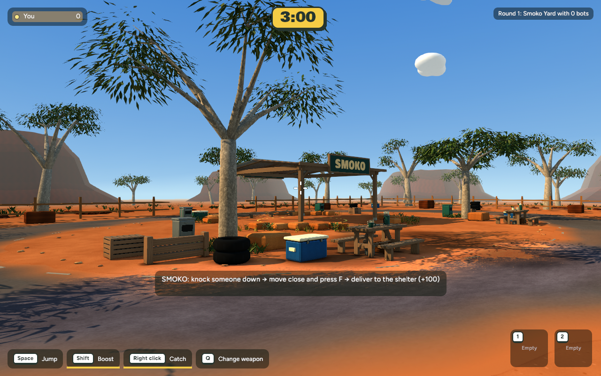
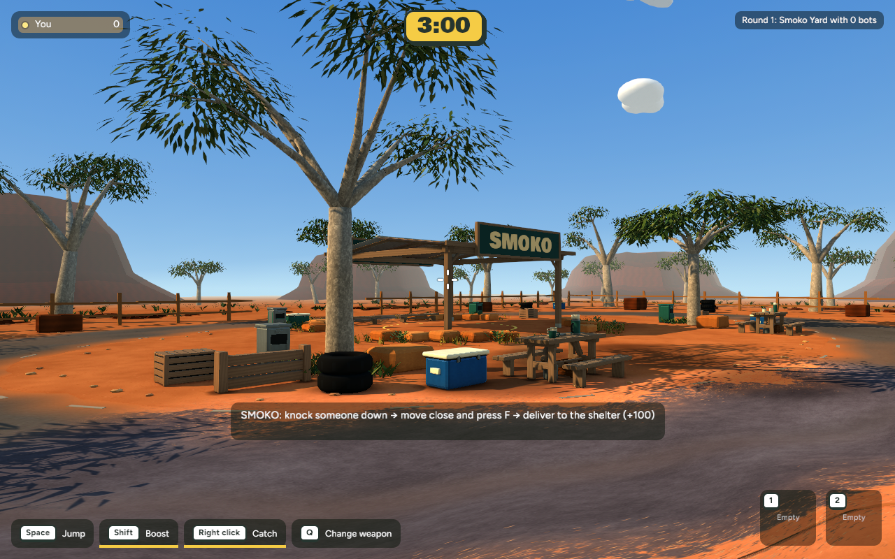
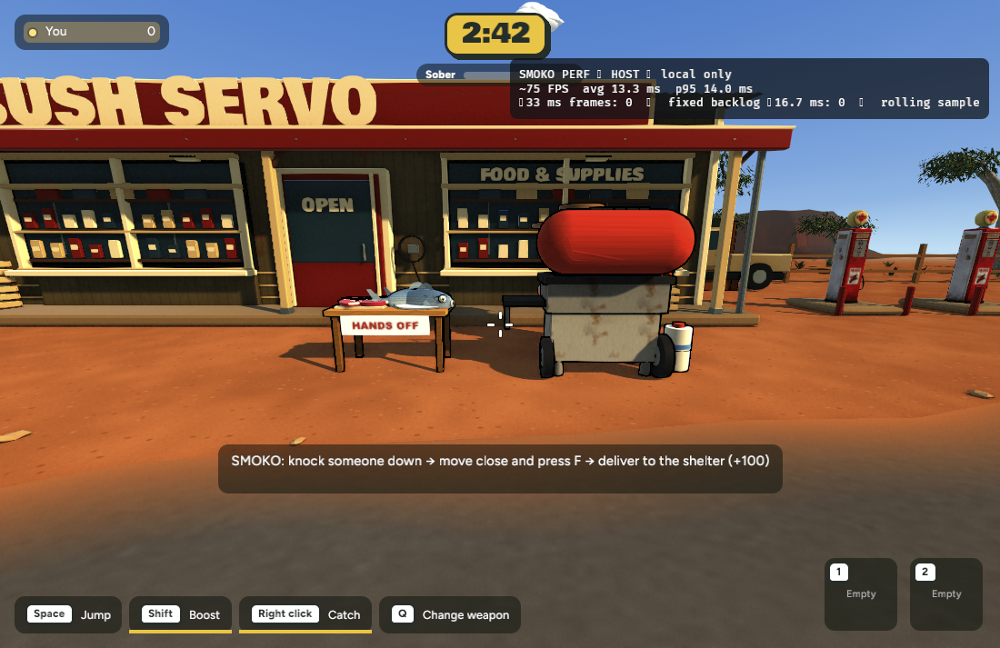

Smoko shelter approach
The tyre and timber rail frame the path to the shelter. The wider green sign reads across the road, and red dirt breaks up the outer edge of the bitumen.
The same view from the entrance




Entrance at walking speed in Chrome. A six-second stationary check beside this approach averaged 13.33 ms per frame before and after. The slowest 5% started at 14.70 ms in both runs.
Cooking station


Ute and carried-player camera
Carry stills · before pickup · carrier's view · guest being carried · guest after release.